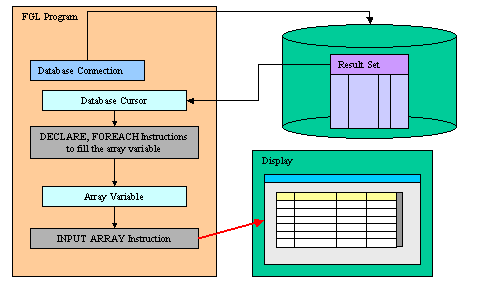
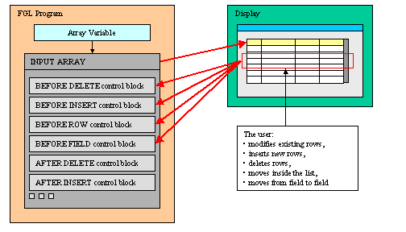
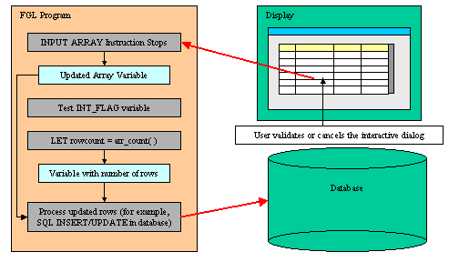

Summary:
See also: Arrays, Records, Result Sets, Programs, Windows, Forms, Display Array
The INPUT ARRAY instruction associates a program array of records with a screen-array defined in a form so that the user can update the list of records. The INPUT ARRAY statement activates the current form (the form that was most recently displayed or the form in the current window):

During the INPUT ARRAY execution, the user can edit or delete existing rows, insert new rows, and move inside the list of records. The user can insert new rows with the insert key, which is by default F1, or delete existing rows with the delete key, which is by default F2. The program controls the behavior of the instruction with control blocks:

To terminate the INPUT ARRAY execution, the user can validate (or cancel) the dialog to commit (or invalidate) the modifications made in the list of records:

When the statement completes execution, the form is de-activated. After the user terminates the input (for example, with the Accept key), the program must test the INT_FLAG variable to check if the dialog was validated (or canceled) and then use INSERT, DELETE, or UPDATE SQL statements to modify the appropriate database tables. The database can also be updated during the execution of the INPUT ARRAY statement.
The INPUT ARRAY dialog implements built-in row sorting which can be used if the dialog is combined with a TABLE container. When the end user clicks on a column header of the table, the rows are automatically sorted in ascending or descending order.
For more details about the built-in sort feature, see the Multiple Dialogs page.
The INPUT ARRAY supports data entry by users into a screen array and stores the entered data in an array of records.
INPUT ARRAY array
[ WITHOUT DEFAULTS ]
FROM screen-array.*
[ ATTRIBUTES ( { display-attribute |
control-attribute } [,...] ) ]
[ HELP help-number ]
[ dialog-control-block
[...]
END INPUT ]
where dialog-control-block is one of:
{ BEFORE INPUT
| AFTER INPUT
| AFTER DELETE
| BEFORE ROW
| AFTER ROW
| BEFORE FIELD field-spec [,...]
| AFTER FIELD field-spec [,...]
| ON ROW CHANGE
| ON CHANGE field-spec [,...]
| ON IDLE idle-seconds
| ON ACTION action-name [INFIELD
field-spec]
| ON KEY ( key-name [,...] )
| BEFORE INSERT
| AFTER INSERT
| BEFORE DELETE
}
dialog-statement
[...]
where dialog-statement is one of:
{ statement
| ACCEPT INPUT
| CONTINUE INPUT
| EXIT INPUT
| NEXT FIELD { CURRENT | NEXT | PREVIOUS |
field-spec }
| CANCEL DELETE
| CANCEL INSERT
}
where field-spec identifies a unique field with one of:
{ field-name
| table-name.field-name
| screen-array.field-name
|
screen-record.field-name
}
The following table shows the options supported by the INPUT ARRAY statement:
| Attribute | Description |
| HELP help-number | Defines the help number when help is invoked by the user, where help-number is an integer literal or a program variable. |
| WITHOUT DEFAULTS | Indicates that the INPUT ARRAY must use program
array data when the dialog starts. The DEFAULT form attributes will always be used for new created rows. |
The following table shows the display-attributes supported by the INPUT ARRAY statement. The display-attributes affect console-based applications only, they do not affect GUI-based applications.
| Attribute | Description |
| BLACK, BLUE, CYAN, GREEN, MAGENTA, RED, WHITE, YELLOW | The TTY color of the displayed data. |
| BOLD, DIM, INVISIBLE, NORMAL | The TTY font attribute of the displayed data. |
| REVERSE, BLINK, UNDERLINE | The TTY video attribute of the displayed data. |
The following table shows the control-attributes supported by the INPUT ARRAY statement:
| Attribute | Description |
| HELP = help-number | Defines the help number when help is invoked by the user, where help-number is an integer literal or a program variable. |
| WITHOUT DEFAULTS [=bool] | Indicates that the INPUT ARRAY must use program
array data when the dialog starts. The bool parameter can be an integer
literal or a program variable that
evaluates to TRUE or FALSE. The DEFAULT form attributes will always be used for new created rows. |
| FIELD ORDER FORM | Indicates that the tabbing order of fields is defined by the TABINDEX attribute of form fields. The default order in which the focus moves from field to field in the screen array is determined by the order of the members in the array variable used by the INPUT ARRAY statement. The program options instruction can also change this behavior with FIELD ORDER FORM options. |
| UNBUFFERED [ =bool] | Indicates that the dialog must be sensitive to program variable changes. The bool parameter can be an integer literal or a program variable. |
| COUNT = row-count | Defines the number of data rows in the static array. The row-count can be an integer literal or a program variable. This is the equivalent of the SET_COUNT() built-in function. |
| MAXCOUNT = row-count | Defines the maximum number of data rows that can be entered in the program array, where row-count can be an integer literal or a program variable. |
| ACCEPT = bool | Indicates if the default accept action should be added to the dialog. If not specified, the action is registered. The bool parameter can be an integer literal or a program variable. |
| CANCEL = bool | Indicates if the default cancel action should be added to the dialog. If not specified, the action is registered. The bool parameter can be an integer literal or a program variable. |
| APPEND ROW [ =bool] | Defines if the user can append new rows at the end of the list. The bool parameter can be an integer literal or a program variable that evaluates to TRUE or FALSE. |
| INSERT ROW [ =bool] | Defines if the user can insert new rows inside the list. The bool parameter can be an integer literal or a program variable that evaluates to TRUE or FALSE. |
| DELETE ROW [ =bool] | Defines if the user can delete rows. The bool parameter can be an integer literal or a program variable that evaluates to TRUE or FALSE. |
| AUTO APPEND [ =bool] | Defines if a temporary row will be created automatically when needed. The bool parameter can be an integer literal or a program variable that evaluates to TRUE or FALSE. |
| KEEP CURRENT ROW [=bool] | Keeps current row highlighted after execution of the instruction. |
The following steps describe how to use the INPUT ARRAY statement:
The INPUT ARRAY statement binds the members of the array of record to the screen array fields specified with the FROM keyword. Array members and screen array fields are bound by position (i.e. not by name). The number of variables in each record of the program array must be the same as the number of fields in each screen record (that is, in a single row of the screen array).
Warning: Keep in mind that array members are bound to screen array fields by position, so you must make sure that the members of the array are defined in the same order as the screen array fields.
When using a static array, the initial number of rows is defined by the COUNT attribute and the size of the array determines how many rows can be inserted. When using a dynamic array, the initial number of rows is defined by the number of elements in the dynamic array (the COUNT attribute is ignored), and the maximum rows is unlimited. For both static and dynamic arrays, the maximum number of rows the user can enter can be defined with the MAXCOUNT attribute. However, MAXCOUNT will be ignored if it is greater that COUNT in case of static arrays, or greater then array.getLength() in case of dynamic arrays.
The FROM clause binds the screen records in the screen array to the program records of the program array. The form can include other fields that are not part of the specified screen array, but the number of member variables in each record of the program array must equal the number of fields in each row of the screen array. When the user enters data, the runtime system checks the entered value against the data type of the variable, not the data type of the screen field.
The variables of the record array are the interface to display data or to get the user input through the INPUT ARRAY instruction. Always use the variables if you want to change some field values programmatically. When using the UNBUFFERED attribute, the instruction is sensitive to program variable changes. If you need to display new data during the INPUT ARRAY execution, use the UNBUFFERED attribute and assign the values to the program array row; the runtime system will automatically display the values to the screen:
01INPUT ARRAY p_items FROM s_items.* ATTRIBUTES(UNBUFFERED)02ON CHANGE code03IF p_items[arr_curr()].code = "A34" THEN04LET p_items[arr_curr()].desc = "Item A34"05END IF06END INPUT
The member variables of the records in a program array can be of any data type: The runtime system will adapt input and display rules to the variable type. If a member is declared with the LIKE clause and uses a column defined as SERIAL/SERIAL8/BIGSERIAL, the runtime system will treat the field as if it was defined as NOENTRY in the form file: Since values of serial columns are automatically generated by the database server, no user input is required for such fields. New generated serials are available in the SQLCA.SQLERRD[2] register for SERIAL columns, and with dbinfo('bigserial') for BIGSERIAL columns.
The default order in which the focus moves from field to field in the screen array is determined by the declared order of the corresponding member variables, in the array of the record definition. The program options instruction can also change the behavior of the INPUT ARRAY instruction, with the INPUT WRAP or FIELD ORDER FORM options.
When the INPUT ARRAY instruction executes, it displays the program array rows in the screen fields, unless you specify the WITHOUT DEFAULTS keywords or option. Unlike the INPUT dialog, the column default values defined in the form specification file with the DEFAULT attribute or in the database schema files are always used when a new row is inserted in the list.
If the program array has the same structure as a database table (this is the case when the array is defined with a LIKE clause), you may not want to display/use some of the columns. You can achieve this by used PHANTOM fields in the screen array definition. Phantom fields will only be used to bind program variables, and will not be transmitted to the front-end for display.
The ATTRIBUTES clause specifications override all default attributes and temporarily override any display attributes that the OPTIONS or the OPEN WINDOW statement specified for these fields. While the INPUT ARRAY statement is executing, the runtime system ignores the INVISIBLE attribute.
The HELP clause specifies the number of a help message to display if the user invokes the help while the focus is in any field used by the instruction. The predefined help action is automatically created by the runtime system. You can bind action views to the 'help' action.
The WITHOUT DEFAULT clause defines whether the program array elements are populated (and to be displayed) when the dialog begins. Once the dialog is started, existing rows are always handled as records to be updated in the database (i.e. WITHOUT DEFAULTS=TRUE), while newly created rows are handled as records to be inserted in the database (i.e. WITHOUT DEFAULTS=FALSE). In other words, column default values defined in the form specification file or the database schema files are only used for new created rows.
It is unusual to implement an INPUT ARRAY with no WITHOUT DEFAULTS option, because the data of the program variables would be cleared and the list empty. So, you typically use the WITHOUT DEFAULT clause in INPUT ARRAY. In a singular INPUT ARRAY, the default is WITHOUT DEFAULTS=FALSE.
The bool parameter can be an integer literal or a program variable that evaluates to TRUE or FALSE.
By default, the form tabbing order is defined by the variable list in the binding specification. You can control the tabbing order by using the FIELD ORDER FORM attribute. When this attribute is used, the tabbing order is defined by the TABINDEX attribute of the form items. With FIELD ORDER FORM, if you jump from one field to a another with the mouse, the BEFORE FIELD / AFTER FIELD triggers of intermediate fields are not executed (actually, the Dialog.fieldOrder FGLPROFILE entry is ignored)
If the form uses a TABLE container, the front-end resets the tab indexes when the user moves columns around. This way, the visual column order always corresponds to the input tabbing order. The order of the columns in an editable list can be important; you may want to freeze the table columns with the UNMOVABLECOLUMNS attribute.
The UNBUFFERED attribute indicates that the dialog must be sensitive to program variable changes. When using this option, you bypass the traditional "buffered" mode.
When using the traditional " buffered" mode, program variable changes are not automatically displayed to form fields; You need to execute a DISPLAY TO or DISPLAY BY NAME. Additionally, if an action is triggered, the value of the current field is not validated and is not copied into the corresponding program variable. The only way to get the text of the current field is to use GET_FLDBUF().
If the "unbuffered" mode is used, program variables and form fields are automatically synchronized. You don't need to display explicitly values with a DISPLAY TO or DISPLAY BY NAME. When an action is triggered, the value of the current field is validated and is copied into the corresponding program variable.
The COUNT attribute defines the number of valid rows in the static array to be displayed as default rows. If you do not use the COUNT attribute, the runtime system cannot determine how much data to display, so the screen array remains empty. You can also use the SET_COUNT() built-in function, but it is supported for backward compatibility only. The COUNT option is ignored when using a dynamic array. If you specify the COUNT attribute, the WITHOUT DEFAULTS option is not required because it is implicit. If the COUNT attribute is greater as MAXCOUNT, the runtime system will take MAXCOUNT as the actual number of rows. If the value of COUNT is negative or zero, it defines an empty list.
The MAXCOUNT attribute defines the maximum number of rows that can be inserted in the program array. This attribute allows you to give an upper limit of the total number of rows the user can enter, when using both static or dynamic arrays.
When binding a static array, MAXCOUNT is used as upper limit if it is lower or equal to the actual declared static array size. If MAXCOUNT is greater than the array size, the size of the static array is used as the upper limit. If MAXCOUNT is lower than the COUNT attribute (or to the SET_COUNT() parameter), the actual number of rows in the array will be reduced to MAXCOUNT.
When binding a dynamic array, the user can enter an infinite number of rows unless the MAXCOUNT attribute is used. If MAXCOUNT is lower than the actual size of the dynamic array, the number of rows in the array will be reduced to MAXCOUNT.
If MAXCOUNT is negative or equal to zero, the user cannot insert rows.
The ACCEPT attribute can be set to FALSE to avoid the automatic creation of the accept default action. This option can be used for example when you want to write a specific validation procedure, by using ACCEPT INPUT.
The CANCEL attribute can be set to FALSE to avoid the automatic creation of the cancel default action. This is useful for example when you only need a validation action (accept), or when you want to write a specific cancellation procedure, by using EXIT INPUT.
Note that if the CANCEL=FALSE option is set, no close action will be created, and you must write an ON ACTION close control block to create an explicit action.
The APPEND ROW attribute can be set to FALSE to avoid the append default action, and deny the user to add rows at the end of the list. If APPEND ROW = FALSE, the user can still insert rows in the middle of the list. Use the INSERT ROW attribute to disallow the user from inserting rows. Additionally, even with APPEND ROW = FALSE, you can still get automatic temporary row creation if AUTO APPEND is not set to FALSE.
Using the INSERT ROW attribute, you can define with a Boolean value whether the user is allowed to insert new rows in the middle of the list. However, even if INSERT ROW is FALSE, the user can still append rows at the end of the list. Use the APPEND ROW attribute to disallow the user from appending rows. Additionally, even with APPEND ROW = FALSE, you can still get automatic temporary row creation if AUTO APPEND is not set to FALSE.
Using the DELETE ROW attribute, you can define with a Boolean value whether the user is allowed to delete rows (TRUE) or not allowed to delete rows (FALSE).
By default, an INPUT ARRAY controller creates a temporary row when needed (for example, when the user deletes the last row of the list, an new row will be automatically created). You can prevent this default behavior by setting the AUTO APPEND attribute to FALSE. When this attribute is set to FALSE, the only way to create a new temporary row is to execute the append action.
Warning: If both the APPEND ROW and INSERT ROW attributes are set to FALSE, the dialog automatically behaves as if AUTO APPEND equals FALSE.
Depending on the list container used in the form, the current row may be highlighted during the execution of the dialog, and cleared when the instruction ends. You can change this default behavior by using the KEEP CURRENT ROW attribute, to force the runtime system to keep the current row highlighted.
When an INPUT ARRAY instruction executes, the runtime system creates a set of default actions. See the control block execution order to understand what control blocks are executed when a specific action is fired.
The following table lists the default actions created for this dialog:
| Default action | Description |
| accept | Validates the INPUT ARRAY dialog (validates fields) Creation can be avoided with ACCEPT attribute. |
| cancel | Cancels the INPUT ARRAY dialog (no validation, INT_FLAG is set) Creation can be avoided with CANCEL attribute. |
| close | By default, cancels the INPUT ARRAY dialog (no validation,
INT_FLAG is set) Default action view is hidden. See Windows closed by the user. |
| insert | Inserts a new row before current row. Creation can be avoided with INSERT ROW = FALSE attribute. |
| append | Appends a new row at the end of the list. Creation can be avoided with APPEND ROW = FALSE attribute. |
| delete | Deletes the current row. Creation can be avoided with DELETE ROW = FALSE attribute. |
| help | Shows the help topic defined by the HELP clause. Only created when a HELP clause is defined. |
| nextrow | Moves to the next row in a list displayed in one row of fields. Only created if DISPLAY ARRAY used with a screen record having only one row. |
| prevrow | Moves to the previous row in a list displayed in one row of fields. Only created if DISPLAY ARRAY used with a screen record having only one row. |
| firstrow | Moves to the first row in a list displayed in one row of fields. Only created if DISPLAY ARRAY used with a screen record having only one row. |
| lastrow | Moves to the last row in a list displayed in one row of fields. Only created if DISPLAY ARRAY used with a screen record having only one row. |
The insert, append, delete, accept and cancel default actions can be avoided with dialog control attributes:
01INPUT ARRAY arr TO sr.* ATTRIBUTES( INSERT ROW=FALSE, CANCEL=FALSE, ... )02...
The BEFORE INPUT block is executed one time, before the runtime system gives control to the user. You can implement initialization in this block.
The AFTER INPUT block is executed one time, after the user has validated or canceled the dialog, and before the runtime system executes the instruction that appears just after the INPUT ARRAY block. You typically implement dialog finalization in this block. The AFTER INPUT block is not executed if EXIT INPUT executes.
The BEFORE ROW block is executed each time the user moves to another row. This trigger can also be executed in other situations, such as when you delete a row, or when the user tries to insert a row but the maximum number of rows in the list is reached (see Control Blocks Execution Order for more details).
You typically do some dialog setup / message display in the BEFORE ROW block, because it indicates that the user selected a new row or entered in the list.
When the dialog starts, BEFORE ROW will be executed for the current row, but only if there are data rows in the array.
When called in this block, the ARR_CURR() function returns the index of the current row.
In the following example, the BEFORE ROW block gets the new row number and displays it in a message:
01INPUT ARRAY ...02...03BEFORE ROW04MESSAGE "We are on row # ", arr_curr()05...06END INPUT
An ON ROW CHANGE block is executed when the user moves to another row after modifications have been done in the current row. It is triggered if the value of a field has changed since the row was entered and if the "touched" flag of the corresponding field is set. The field might not be the current field, and several field values can be changed.
The "touched" flag is set on user input or by program, when doing a DISPLAY TO / DISPLAY BY NAME or when setting explicitly the flag with the ui.Dialog.setFieldTouched() method. Note that the "touched" flag is reset for all fields when entering another row, or when leaving the dialog instruction.
You can, for example, code database modifications (UPDATE) in this block. This block is executed before the AFTER ROW block if defined. When called in this block, the ARR_CURR() function returns the index of the current row where values have been changed.
01INPUT ARRAY p_items FROM s_items.*02ON ROW CHANGE03UPDATE items SET04items.code = p_items[arr_curr()].code,05items.description = p_items[arr_curr()].description,06items.price = p_items[arr_curr()].price,07items.updatedate = TODAY08WHERE items.num = p_items[arr_curr()].num09...
The AFTER ROW block is executed each time the user moves to another row, before the current row is left. This trigger can also be executed in other situations, such as when you delete a row, or when the user inserts a new row. see Control Blocks Execution Order for more details.
A NEXT FIELD instruction executed in the AFTER ROW control block will keep the user entry in the current row. Thus you can use this to implement row input validation and prevent the user from leaving the list or moving to another row. However, NEXT FIELD will be ignored in some situations, see warning below.
When called in this block, the ARR_CURR() function return the index of the row that you are leaving.
Warning: After creating a temporary row at the end of the list, if you leave that row to a previous row without data input or when the cancel action is fired, the temporary row will be automatically removed. The AFTER ROW block will be executed for the temporary row, but ui.Dialog.getCurrentRow() / ARR_CURR() will be one row greater as ui.Dialog.getArrayLength() / ARR_COUNT(). In this case, you should ignore the AFTER ROW event. For example, you should not try to execute a NEXT FIELD or CONTINUE INPUT instruction, nor should you try to access the dynamic array with a row index that is greater as the total number of rows, otherwise the runtime system will adapt the total number of rows to the actual number of rows in the program array.
In the following example, the AFTER ROW block checks a variable value and forces the user to stay in the current row if the value is wrong:
01INPUT ARRAY p_items FROM s_items.*02...03AFTER ROW04IF arr_curr()>0 AND arr_curr() <= arr_count() THEN05IF NOT item_is_valid_quantity(p_item[arr_curr()].item_quantity) THEN06ERROR "Item quentity is not valid"07NEXT FIELD item_quantity08END IF09END IF10...
Another way to handle the case of temporary rows in AFTER ROW is to use a flag to know if the AFTER INSERT block was executed: The AFTER INSERT block is not executed if the temporary row is automatically removed. By setting a first value in BEFORE INSERT and changing the flag in AFTER INSERT, you can detect if the row was permanently added to the list:
01INPUT ARRAY p_items FROM s_items.*02...03BEFORE INSERT04LET op = "T"05...06AFTER INSERT07LET op = "I"08...09AFTER ROW10IF op == "I" THEN11IF NOT item_is_valid_quantity(p_item[arr_curr()].item_quantity) THEN12ERROR "Item quentity is not valid"13NEXT FIELD item_quantity14END IF15WHENEVER ERROR CONTINUE16INSERT INTO items (item_num, item_name, item_quantity) VALUES ( p_item[arr_curr()].* )17WHENEVER ERROR STOP18IF SQLCA.SQLCODE<0 THEN19ERROR "Could not insert the record into database!"20NEXT FIELD CURRENT21ELSE22MESSAGE "Record has been inserted successfully"23END IF24END IF25...
A BEFORE FIELD block is executed each time the cursor enters into the specified field, when moving the focus from field to field in the same row, or when moving to another row. The BEFORE FIELD block is also executed when using NEXT FIELD.
Warning: When using the default FIELD ORDER CONSTRAINT mode, the dialog executes the BEFORE FIELD block of the field corresponding to the first variable of the INPUT ARRAY, even if that field is not editable (NOENTRY, hidden or disabled). The block is executed when you enter the dialog and every time you create a new row in the case of INPUT ARRAY. This behavior is supported for backward compatibility. The block is not executed when using the FIELD ORDER FORM.
Warning: With the FIELD ORDER FORM mode, for each dialog executing the first time with a specific form, the BEFORE FIELD block might be fired for the first field of the initial tabbing list defined by the form, even if that field was hidden or moved around in a table. The dialog then behaves as if a NEXT FIELD first-visible-column would have been done in the BEFORE FIELD of that field.
The ON CHANGE block is executed when another field is selected, if the value of the specified field has changed since the field got the focus and if the "touched" field flag is set. The "touched" flag is set when a user modification is done or when doing a DISPLAY TO or a DISPLAY BY NAME. Once set, the "touched" flag is not reset until the end of the dialog.
For fields defined as RadioGroup, ComboBox, SpinEdit, Slider, and CheckBox views, the ON CHANGE block is fired immediately when the user changes the value. For other type of fields (like Edits), the ON CHANGE block is fired when leaving the field. You leave the field when you validate the dialog, when you move to another field, or when you move to another row in an INPUT ARRAY. Note that the dialogtouched predefined action can also be used to detect field changes immediately, but with this action you can't get the data in the target variables (and it should only be used to detect that the user has started to modify data)
If both an ON CHANGE block and AFTER FIELD block are defined for a field, the ON CHANGE block is executed before the AFTER FIELD block.
When changing the value of the current field by program in an ON ACTION block, the ON CHANGE block will be executed when leaving the field if the value is different from the reference value and if the "touched" flag is set (after previous user input or DISPLAY TO / DISPLAY BY NAME).
When using the NEXT FIELD instruction, the comparison value is re-assigned as if the user had left and re-entered the field. Therefore, when using NEXT FIELD in an ON CHANGE block or in an ON ACTION block, the ON CHANGE block will only be fired again if the value is different from the reference value. Therefore, it is recommended not to attempt field validation in ON CHANGE blocks: you would do better to perform validations in AFTER FIELD blocks and/or AFTER INPUT blocks.
An AFTER FIELD block is executed each time the cursor leaves the specified field, when moving the focus from field to field in the same row, or when moving to another row.
The BEFORE INSERT block is executed each time the user inserts a new row, before the new row is created and made the current one.
You typically assign default values to the array variables of the newly created row, before the user gets control to enter more values and validates the row creation.
When called in this block, the ARR_CURR() function returns the index of the newly created row. The row in the program array can be referenced with this index, since the new element is already created in the array. Note that the BEFORE ROW block is also executed (just before BEFORE INSERT) when inserting a new row, but the current row index returned by ARR_CURR() is one higher than the actual number of rows in the list (arr_count()).
If needed, you can cancel the insert operation with the CANCEL INSERT instruction. Note that this control instruction can only be used in a BEFORE INSERT or AFTER INSERT block. When a CANCEL INSERT is performed in BEFORE INSERT, the dialog will execute some control blocks such as AFTER ROW / BEFORE ROW / BEFORE FIELD for the current row, even if no new row was inserted.
In the following example, the BEFORE INSERT block sets some default values and displays a message:
01INPUT ARRAY p_items FROM s_items.*02BEFORE INSERT03LET r = DIALOG.getCurrentRow("s_items")04LET p_items[r].item_num = getNewSerial("items")05LET p_items[r].item_code = "C" || p_items[r].item_num06LET p_items[r].item_price = 100.0007MESSAGE "You are creating a new record..."08...
The AFTER INSERT block is executed each time the user leaves a new created row. This block is typically used to implement SQL command that inserts a new row in the database. You can cancel the operation with the CANCEL INSERT instruction.
Warning: When the the user appends a new row at the end of the list, then moves UP to another row or validates the dialog, the AFTER INSERT block is only executed if at least one field was edited. If no data entry is detected, the dialog automatically removes the new appended row and thus does not trigger the AFTER INSERT block.
In the following example, the AFTER INSERT block inserts a new row in the database and cancels the operation if the SQL command fails:
01INPUT ARRAY02...03AFTER INSERT s_items04LET r = DIALOG.getCurrentRow("s_items")05INSERT INTO items VALUES ( p_items[r]. * )06IF SQLCA.SQLCODE < 0 THEN07ERROR "Could not insert row into database"08CANCEL INSERT09END IF10...11END INPUT
When executing a NEXT FIELD in the AFTER INSERT block, the dialog will stay in the current row. You can use this to implement row input validation and prevent the user from leaving the list or moving to another row. However, this will not cancel the row insertion and will not fire the BEFORE INSERT / AFTER INSERT triggers again. The only way to keep the focus in the current row after this is to execute a NEXT FIELD in the AFTER ROW block.
The BEFORE DELETE block is executed each time the user deletes a row, before the row is removed from the list.
You typically code the database table synchronization in the BEFORE DELETE block, by executing a DELETE SQL statement using the primary key of the current row. In the BEFORE DELETE block, the row to be deleted still exists in the program array, so you can access its data to identify what record needs to be removed.
If needed, the deletion can be canceled with the CANCEL DELETE instruction.
When called in this block, the ARR_CURR() function returns the index of the row that will be deleted.
In the following example, the BEFORE DELETE block removes the row from the database table and cancels the deletion operation if an SQL error occurs:
01INPUT ARRAY p_items FROM s_items.*02BEFORE DELETE03WHENEVER ERROR CONTINUE04DELETE FROM items WHERE item_num = p_items[arr_curr()].item_num05WHENEVER ERROR STOP06IF SQLCA.SQLCODE<>0 VALUES07ERROR SQLERRMESSAGE08CANCEL DELETE09END IF10...
The AFTER DELETE block is executed each time the user deletes a row, after the row has been deleted from the list.
When an AFTER DELETE block executes, the program array has already been modified; the deleted row no longer exists in the array (except in the special case when deleting the last row, see warning below). Note that the ARR_CURR() function returns the same index as in BEFORE ROW, but it is the index of the new current row. Note that the AFTER ROW block is also executed just after the AFTER DELETE block.
Warning: When deleting the last row of the list, AFTER DELETE is executed for the delete row, and ARR_CURR() will be one higher as ARR_COUNT(). You should not access a dynamic array with a row index that is greater as the total number of rows, otherwise the runtime system will adapt the total number of rows to the actual number of rows in the program array. When using a static array, you must ignore the values in the rows after ARR_COUNT().
In the following example, the AFTER DELETE block is used to re-number the rows with a new item line number (note ARR_COUNT() may return zero):
01INPUT ARRAY p_items FROM s_items.*02AFTER DELETE03LET r = arr_curr()04FOR i=r TO arr_count()05LET p_items[i].item_lineno = i06END FOR07...
The following table shows the order in which the runtime system executes the control blocks in the INPUT ARRAY instruction, according to the user action:
| Context / User action | Control Block execution order |
| Entering the dialog |
|
| Moving to a different row from field A to field B |
|
| Moving from field A to field B in the same row |
|
| Deleting a row |
|
| Inserting a new row between rows |
|
| Appending a new row at the end |
|
| Validating the dialog |
|
| Canceling the dialog |
|
The ON IDLE idle-seconds clause defines a set of instructions that must be executed after idle-seconds of inactivity. For example, this can be used to quit the dialog after the user has not interacted with the program for a specified period of time. The parameter idle-seconds must be an integer literal or variable. If it evaluates to zero, the timeout is disabled.
You should not use the ON IDLE trigger with a short timeout period such as 1 or 2 seconds; The purpose of this trigger is to give the control back to the program after a relatively long period of inactivity (10, 30 or 60 seconds). This is typically the case when the end user leaves the workstation, or got a phone call. The program can then execute some code before the user gets the control back.
01...02ON IDLE 3003IF ask_question("Do you want to leave the dialog?") THEN04EXIT INPUT05END IF06...
You can use ON ACTION blocks to execute a sequence of instructions when the user raises a specific action. This is the preferred solution compared to ON KEY blocks, because ON ACTION blocks use abstract names to control user interaction.
01...02ON ACTION zoom03CALL zoom_customers() RETURNING st, cust_id, cust_name04...
You can add the INFIELD field-spec clause to the ON ACTION action-name statement to make the runtime system enable/disable the action automatically when the focus enters/leaves the specified field:
01ON ACTION zoom INFIELD customer_city02LET rec.customer_city = zoom_city()
For more details about ON ACTION and binding action views, see Interaction Model.
For backward compatibility, you can use ON KEY blocks to execute a sequence of instructions when the user presses a specific key. The following key names are accepted by the compiler:
| Key Name | Description |
| ACCEPT | The validation key. |
| INTERRUPT | The interruption key. |
| ESC or ESCAPE | The ESC key (not recommended, use ACCEPT instead). |
| TAB | The TAB key (not recommended). |
| Control-char | A control key where char can be any character except A, D, H, I, J, K, L, M, R, or X. |
| F1 through F255 | A function key. |
| DELETE | The key used to delete a new row in an array. |
| INSERT | The key used to insert a new row in an array. |
| HELP | The help key. |
| LEFT | The left arrow key. |
| RIGHT | The right arrow key. |
| DOWN | The down arrow key. |
| UP | The up arrow key. |
| PREVIOUS or PREVPAGE | The previous page key. |
| NEXT or NEXTPAGE | The next page key. |
An ON KEY block defines one to four different action objects that will be identified by the key name in lowercase (ON KEY(F5,F6) = creates Action f5 + Action f6). Each action object will get an acceleratorName assigned. In GUI mode, Action Defaults are applied for ON KEY actions by using the name of the key. You can define secondary accelerator keys, as well as default decoration attributes like button text and image, by using the key name as action identifier. Note that the action name is always in lowercase letters. See Action Defaults for more details.
Warning: Check carefully the ON KEY CONTROL-? statements because they may result in having duplicate accelerators for multiple actions due to the accelerators defined by Action Defaults. Additionally, ON KEY statements used with ESC, TAB, UP, DOWN, LEFT, RIGHT, HELP, NEXT, PREVIOUS, INSERT, CONTROL-M, CONTROL-X, CONTROL-V, CONTROL-C and CONTROL-A should be avoided for use in GUI programs, because it's very likely to clash with default accelerators defined in the Action Defaults.
By default, ON KEY actions are not decorated with a default button in the action frame (i.e. default action view). You can show the default button by configuring a text attribute with the Action Defaults.
CONTINUE INPUT skips all subsequent statements in the current control block and gives the control back to the dialog. This instruction is useful when program control is nested within multiple conditional statements, and you want to return the control to the dialog. Note that if this instruction is called in a control block that is not AFTER INPUT, further control blocks might be executed according to the context. Actually, CONTINUE INPUT just instructs the dialog to continue as if the code in the control block was terminated (i.e. it's a kind of GOTO end_of_control_block). However, when executed in AFTER INPUT, the focus returns to the current row and current field in the list, giving the user another chance to enter data in that field. In this case the BEFORE ROW and BEFORE FIELD triggers will be fired.
In the following example, an ON ACTION block gives control back to the dialog, skipping all instructions below line 04:
01ON ACTION zoom02IF p_cust.cust_id IS NULL OR p_cust.cust_name IS NULL THEN03ERROR "Zoom window cannot be opened if there is no info to identify the customer"04CONTINUE INPUT05END IF06IF p_cust.cust_address IS NULL THEN07...
Note that you can also use the NEXT FIELD control instruction to give the focus to a specific field and force the dialog to continue. However, unlike CONTINUE INPUT, the NEXT FIELD instruction will also skip the further control blocks that are normally executed.
You can use the EXIT INPUT to terminate the INPUT ARRAY instruction and resume the program execution at the instruction following the INPUT ARRAY block.
01ON ACTION quit02EXIT DIALOG
When leaving the INPUT ARRAY instruction, all form items used by the dialog will be disabled until another interactive statement takes control.
The ACCEPT INPUT instruction validates the INPUT instruction and exits the INPUT ARRAY instruction if no error is raised. The AFTER FIELD, ON CHANGE, etc. control blocks will be executed. Statements after the ACCEPT INPUT will not be executed.
Input field validation is a process that does several successive validation tasks, as listed below:
If a field does not satisfy one of the above constraints, dialog termination is canceled, an error message is displayed, and the focus goes to the first field causing a problem.
Insertion can be canceled, by using the CANCEL INSERT instruction, in the BEFORE INSERT or AFTER INSERT blocks. Using this instruction in a different place will generate a compilation error.
The instructions that appear after CANCEL INSERT will be skipped.
A CANCEL INSERT executed inside a BEFORE INSERT block prevents the new row creation. The following tasks are performed:
For example, you can cancel a row insertion if the user is not allowed to create rows:
01BEFORE INSERT02IF user_can_insert() == FALSE THEN03ERROR "You are not allowed to insert rows"04CANCEL INSERT05END IF
A CANCEL INSERT executed inside an AFTER INSERT block removes the newly created row. The following tasks are performed:
For example, you can cancel a row insertion if a database error occurs when you try to insert the row into a database table:
01AFTER INSERT02WHENEVER ERROR CONTINUE03INSERT INTO customer VALUES ( arr[arr_curr()].* )04WHENEVER ERROR STOP05IF SQLCA.SQLCODE<>0 THEN06ERROR SQLERRMESSAGE07CANCEL INSERT08END IF
If the CANCEL INSERT is done while on a new row that was appended to the end of the list, the new row will be removed and the previous row will get the focus. If there are no more existing rows, the list loses the focus because no row can be edited. The next time the user clicks in a cell, DIALOG will automatically create a new row.
You can also disable the insert and append actions to prevent the user from performing these actions with:
01CALL DIALOG.setActionActive("insert", FALSE)02CALL DIALOG.setActionActive("append", FALSE)
Deletion can be canceled, by using the CANCEL DELETE instruction in the BEFORE DELETE block. Using this instruction in a different place will generate a compilation error.
When the CANCEL DELETE instruction is executed, the current BEFORE DELETE block is terminated without any other trigger execution (no BEFORE ROW or BEFORE FIELD is executed), and the program execution continues in the user event loop.
For example, you can prevent row deletion based on some condition:
01BEFORE DELETE02IF user_can_delete() == FALSE THEN03ERROR "You are not allowed to delete rows"04CANCEL DELETE05END IF
The instructions that appear after CANCEL DELETE will be skipped.
You can also disable the delete action to prevent the user from performing a delete row action with:
01 CALL DIALOG.setActionActive("delete", FALSE)The NEXT FIELD field-name instruction gives the focus to the specified field. You typically use this instruction to control field input dynamically, in BEFORE FIELD or AFTER FIELD blocks, or to control row validation in AFTER ROW.
Abstract field identification is supported with the CURRENT, NEXT and PREVIOUS keywords. These keywords represent the current, next and previous fields respectively. When using FIELD ORDER FORM, the NEXT and PREVIOUS options follow the tabbing order defined by the form. Otherwise, they follow the order defined by the input binding list (with the FROM or BY NAME clause). Note that when selecting a non-editable field with NEXT FIELD NEXT, the runtime system will re-select the current field since it is the next editable field in the dialog. As a result the end user sees no change.
Non-editable fields are fields defined with the NOENTRY attribute, fields disabled with ui.Dialog.setFieldActive("field-name", FALSE), or fields using a widget that does not allow input, such as a LABEL. If a NEXT FIELD instruction selects a non-editable field, the next editable field gets the focus (defined by the FIELD ORDER mode used by the dialog). However, the BEFORE FIELD and AFTER FIELD blocks of non-editable fields are executed when a NEXT FIELD instruction selects such a field.
When using NEXT FIELD in AFTER ROW or in ON ROW CHANGE, the dialog will stay in the current row and give the control back to the user. This behavior allows to implement data input rules:
01...02AFTER ROW03IF NOT int_flag AND arr_curr() <= arr_count() THEN04IF arr[arr_curr()].it_count * arr[arr_curr()].it_value > maxval THEN05ERROR "Amount of line exceeds max value."06NEXT FIELD item_count07END IF09...
For backward compatibility, the CLEAR field-list instruction is provided to clear a specific field or all fields in a line of the screen array. You can specify the screen array as described in the following table:
| CLEAR instruction | Result |
| CLEAR field-name | Clears the specified field in the current line of the screen array. |
| CLEAR screen-array.* | Clears all fields in the current line of the screen array. |
| CLEAR screen-array[n].* | Clears all fields in line n of the screen array. |
| CLEAR screen-array[n].field-name | Clears the specified field in line n of the screen array. |
Inside the dialog instruction, the predefined keyword DIALOG represents the current dialog object. It can be used to execute methods provided in the dialog built-in class.
For example, you can enable or disable an action with the ui.Dialog.setActionActive() dialog method, and you can hide and show the default action view with ui.Dialog.setActionHidden():
01...02BEFORE INPUT03CALL DIALOG.setActionActive("zoom",FALSE)04AFTER FIELD field105CALL DIALOG.setActionHidden("zoom",1)06...
The ui.Dialog.setFieldActive() method can be used to enable or disable a field during the dialog. This instruction takes an integer expression as argument.
01...02ON CHANGE custname03CALL DIALOG.setFieldActive( "custaddr", (cust_arr[arr_curr()].custname IS NOT NULL) )04...
The language provides several built-in functions and operators to use in an INPUT ARRAY statement. You can use the following built-in functions to keep track of the relative states of the current row, the program array, and the screen array, or to access the field buffers and keystroke buffers:
Form definition file (custlist.per):
01SCHEMA stores02LAYOUT03TABLE04{05Id First name Last name06[f001 |f002 |f003 ]07[f001 |f002 |f003 ]08[f001 |f002 |f003 ]09[f001 |f002 |f003 ]10[f001 |f002 |f003 ]11[f001 |f002 |f003 ]12}13END14END15TABLES16customer17END18ATTRIBUTES19f001 = customer.customer_num ;20f002 = customer.fname ;21f003 = customer.lname, NOT NULL, REQUIRED ;22END23INSTRUCTIONS24SCREEN RECORD sr_cust[6]( customer.* );25END
Program source code:
01MAIN02DEFINE custarr ARRAY[500] OF RECORD03id INTEGER,04fname CHAR(30),05lname CHAR(30)06END RECORD0708OPEN FORM f FROM "custlist"09DISPLAY FORM f1011INPUT ARRAY custarr WITHOUT DEFAULTS FROM sr_cust.*12END MAIN
The form definition file is the same as in example 1.
01MAIN02DEFINE allow_insert INTEGER03DEFINE size INTEGER04DEFINE custarr ARRAY[500] OF RECORD05id INTEGER,06fname CHAR(30),07lname CHAR(30)08END RECORD09LET custarr[1].id = 110LET custarr[1].fname = "John"11LET custarr[1].lname = "SMITH"12LET custarr[2].id = 213LET custarr[2].fname = "Mike"14LET custarr[2].lname = "STONE"15LET size = 216LET allow_insert = TRUE1718OPEN FORM f1 FROM "custlist"19DISPLAY FORM f12021INPUT ARRAY custarr WITHOUT DEFAULTS FROM sr_cust.*22ATTRIBUTES (COUNT=size, MAXCOUNT=50, UNBUFFERED, INSERT ROW=allow_insert)23BEFORE INPUT24MESSAGE "Editing the customer table"25BEFORE INSERT26IF arr_curr()=4 THEN27CANCEL INSERT28END IF29BEFORE FIELD fname30MESSAGE "Enter First Name"31BEFORE FIELD lname32MESSAGE "Enter Last Name"33AFTER FIELD lname34IF custarr[arr_curr()].lname IS NULL THEN35LET custarr[arr_curr()].fname = NULL36END IF37END INPUT38END MAIN
The form definition file is the same as in example 1.
01MAIN02DEFINE counter INTEGER03DEFINE custarr DYNAMIC ARRAY OF RECORD04id INTEGER,05fname CHAR(30),06lname CHAR(30)07END RECORD10FOR counter = 1 TO 50011LET custarr[1].id = counter12LET custarr[1].fname = "ff"||counter13LET custarr[1].lname = "NNN"||counter14END FOR1516OPEN FORM f FROM "custlist"17DISPLAY FORM f1819INPUT ARRAY custarr WITHOUT DEFAULTS FROM sr_cust.*20ATTRIBUTES ( UNBUFFERED )21ON ROW CHANGE22MESSAGE "Row #"||arr_curr()||" has been updated."23END INPUT24END MAIN
The form definition file is the same as in example 1.
001MAIN002003DEFINE custarr DYNAMIC ARRAY OF RECORD004id INTEGER,005fname CHAR(30),006lname CHAR(30)007END RECORD008009DEFINE op CHAR(1)010DEFINE i INTEGER011012DATABASE stores_demo013014OPEN FORM f1 FROM "custlist"015DISPLAY FORM f1016017DECLARE c1 CURSOR FOR018SELECT customer_num, fname, lname019FROM customer ORDER BY customer_num020LET i = 1021FOREACH c1 INTO custarr[i].*022LET i = i + 1023END FOREACH024CALL custarr.deleteElement(custarr.getLength())025026INPUT ARRAY custarr FROM sr_cust.* ATTRIBUTES(WITHOUT DEFAULTS, UNBUFFERED)027028BEFORE DELETE029IF op == "N" THEN -- No real SQL delete for new inserted rows030IF NOT mbox_yn("List", "Are you sure you want to delete this record?", "question") THEN031CANCEL DELETE -- Keeps row in list032END IF033WHENEVER ERROR CONTINUE034DELETE FROM customer WHERE customer_num = custarr[arr_curr()].id035WHENEVER ERROR STOP036IF SQLCA.SQLCODE<0 THEN037ERROR "Could not delete the record from database!"038CANCEL DELETE -- Keeps row in list039END IF040END IF041042AFTER DELETE043IF op == "N" THEN044MESSAGE "Record has been deleted successfully"045ELSE046LET op = "N"047END IF048049AFTER FIELD fname050IF custarr[arr_curr()].fname MATCHES "*@#$%^&()*" THEN051ERROR "This field contains invalid characters"052NEXT FIELD CURRENT053END IF054055ON ROW CHANGE056-- Warning: ON ROW CHANGE can occur if the SQL INSERT failed...057IF op != "I" THEN LET op = "M" END IF058059BEFORE INSERT060LET op = "T"061SELECT MAX(customer_num)+1 INTO custarr[arr_curr()].id FROM customer062IF custarr[arr_curr()].id IS NULL THEN063LET custarr[arr_curr()].id = 1064END IF065066AFTER INSERT067LET op = "I"068069BEFORE ROW070LET op = "N"071072AFTER ROW073IF int_flag THEN EXIT INPUT END IF074IF op == "M" OR op == "I" THEN075IF custarr[arr_curr()].fname IS NULL OR custarr[arr_curr()].fname IS NULL076OR custarr[arr_curr()].fname == custarr[arr_curr()].lname THEN077ERROR "First name and last name are equal..."078NEXT FIELD fname079END IF080END IF081IF op == "I" THEN082WHENEVER ERROR CONTINUE083INSERT INTO customer (customer_num, fname, lname) VALUES ( custarr[arr_curr()].* )084WHENEVER ERROR STOP085IF SQLCA.SQLCODE<0 THEN086ERROR "Could not insert the record into database!"087NEXT FIELD CURRENT088ELSE089MESSAGE "Record has been inserted successfully"090END IF091END IF092IF op == "M" THEN093WHENEVER ERROR CONTINUE094UPDATE customer SET fname = custarr[arr_curr()].fname, lname = custarr[arr_curr()].lname095WHERE customer_num = custarr[arr_curr()].id096WHENEVER ERROR STOP097IF SQLCA.SQLCODE<0 THEN098ERROR "Could not update the record in database!"099NEXT FIELD CURRENT100ELSE101MESSAGE "Record has been updated successfully"102END IF103END IF104105END INPUT106107END MAIN108109FUNCTION mbox_yn(title,message,icon)110DEFINE title, message, icon STRING111DEFINE r SMALLINT112MENU title ATTRIBUTES(STYLE='dialog',IMAGE=icon,COMMENT=message)113COMMAND "Yes" LET r=TRUE114COMMAND "No" LET r=FALSE115END MENU116RETURN r117END FUNCTION